Trent Petersen
CSCE 242: Website Applications
Assignments
Assignment 1 - Basic HTML
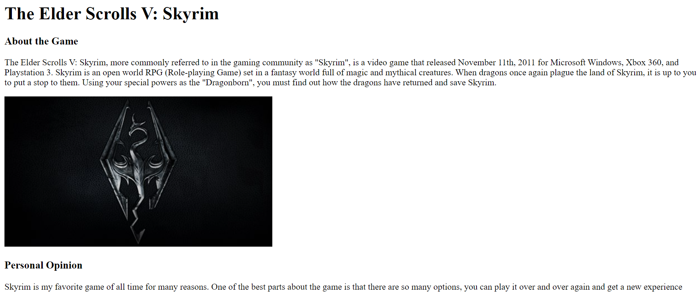I created a basic HTML webpage about a topic of my choice. I used a simple layout and added the most basic elements to the webpage such as headers, paragraphs, images, lists, and links.
Assignment 2 - Basic CSS
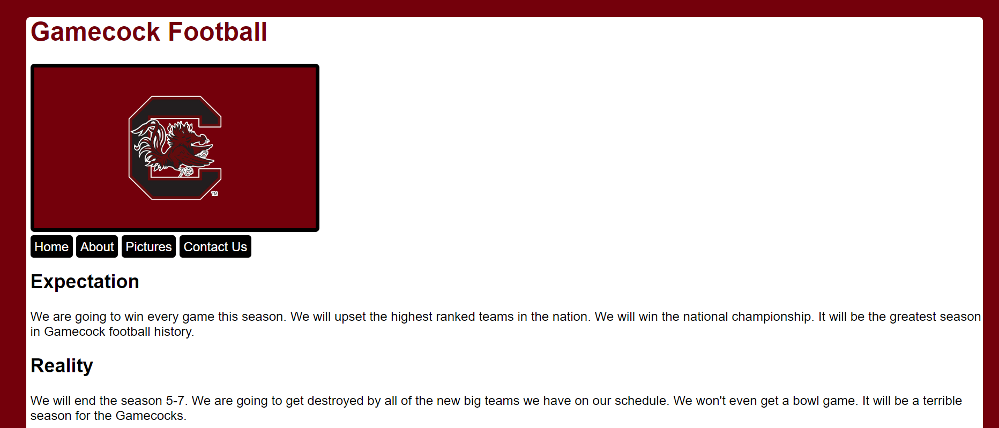I created another simple webpage using most of the same elements from the previous assignment. However, this time I used a CSS stylesheet to make the website look visually appealing.
Assignment 3 - Page layout
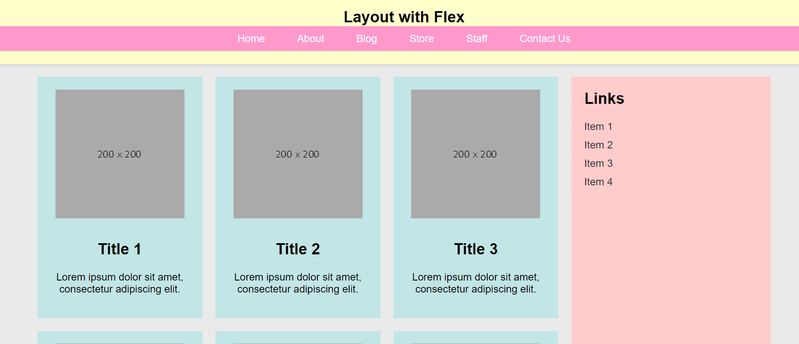I created a new webpage with the main objective of recreating a layout that was given to us. I used a CSS stylesheet to try to make the webpage look identical. I utilized media queries to make two different views for the webpage.
Assignment 4 - Recreating a webpage
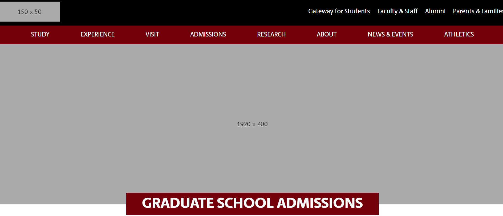I was given the link to the UofSC graduate school admissions page. Using an html and more new tools on the stylesheet, I recreated the page as closely as possible.
Assignment 5 - Intro to Javascript
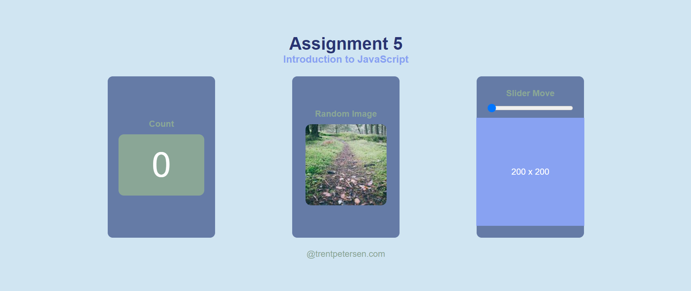I recreated another webpage, but this time using Javascript to allow for interaction on the page. I used an html, a stylesheet, and a script.js file to make three different interactions possible.
Assignment 6 - If Statements
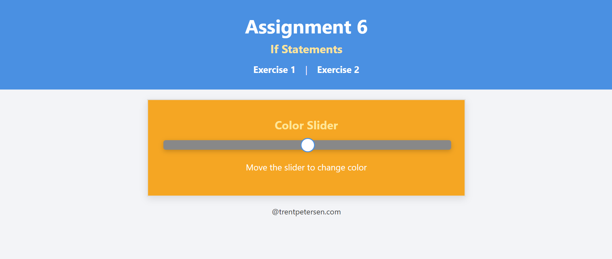I created a single page that allows you to switch between two different exercises. One is a color slider, and the other is a picture chooser. This was made possible by combining an html, a stylesheet, and a script.js.
Assignment 7 - Loops
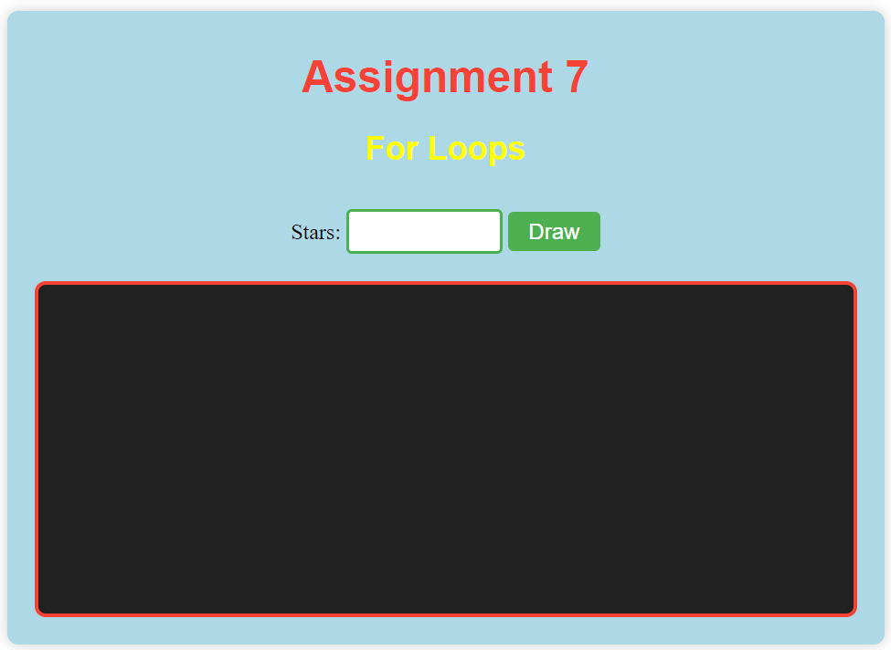I created a single-page application that allows the user to draw a specified number of stars in random positions within a container. The page was built by integrating HTML for structure, a CSS stylesheet for styling, and a script.js file for functionality, making it possible to dynamically generate stars based on user input.
Assignment 8 - Arrays
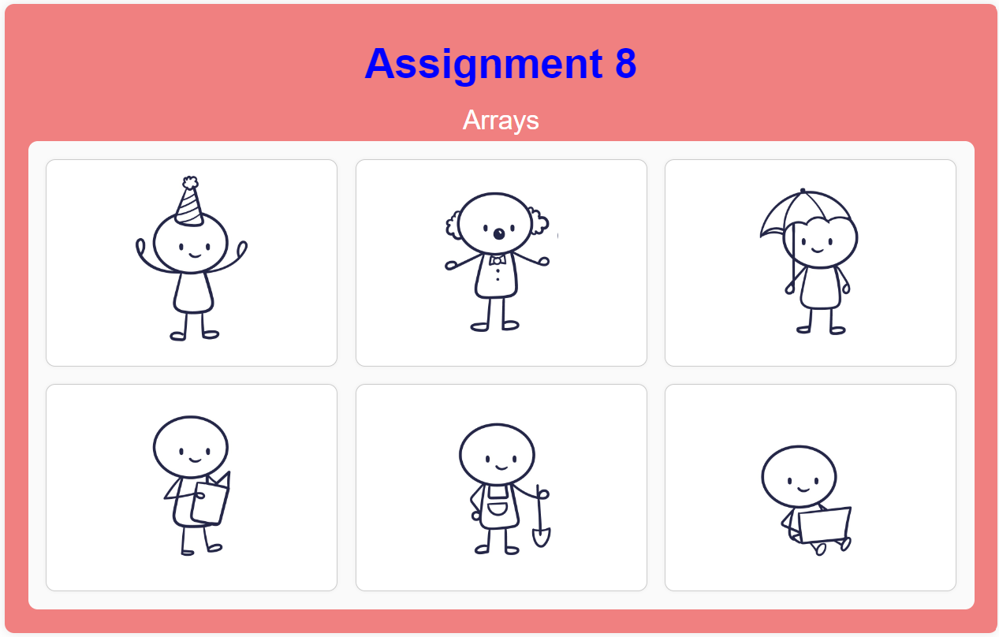I developed a single-page layout that displays a grid of character images. When an image is clicked, a corresponding title and description appear above the grid. This functionality was implemented using HTML for structure, CSS for styling and layout, and a script.js file to handle the image data and click events.
Assignment 9 - Classes
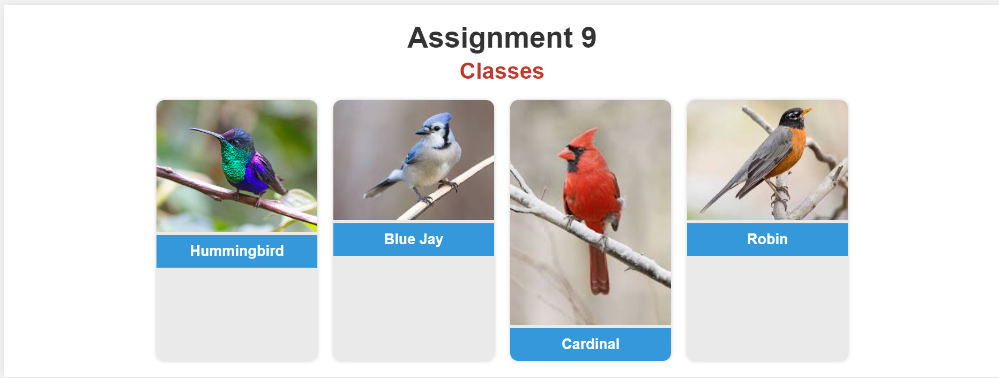I created a webpage with bird cards displaying their names above their images. Using HTML, CSS, and JavaScript, each card is dynamically generated, and clicking on a card opens a modal with detailed bird information. The styling and layout match the provided design, ensuring a clean and interactive display.
Projects
Topic
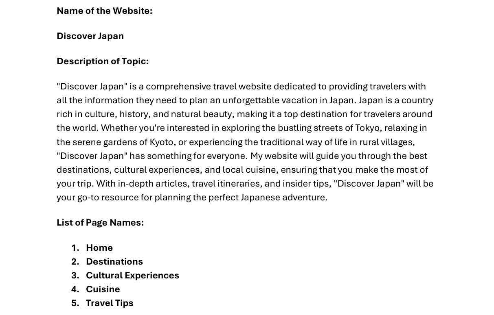This PDF outlines my topic for my Mockitt webpage. I am creating a webpage called "Discover Japan" which is a travel site for people interested in vacationing in Japan. It includes 5 pages: Home, Destinations, Cultural Experiences, Cuisine, and Travel tips.
Wireframe
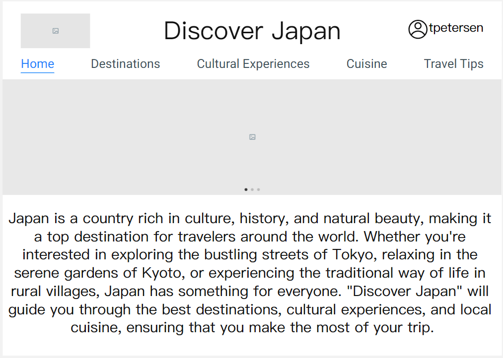I used Mockitt to wireframe my webpage including the 5 different pages listed in my topic outline. Each page has different visuals and features to create a simple experience for users. This webpage design includes all the basic elements that you would need to plan your dream trip to Japan.
Prototype
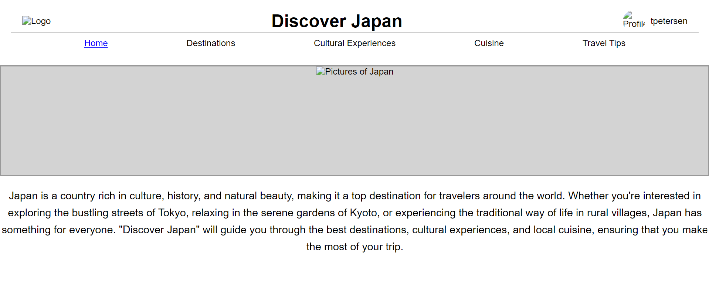Following the wireframe I created on Mockitt, I made an HTML and a CSS to create a prototype for my webpage "Discover Japan". I matched the webpage to the Mockitt as closely as possible, with some minor changes that I believed to be improvements.
Style
For this part of the project, I added color and pictures to the webpage I made before. I updated the stylesheet to give the webpage a color theme that matches the theme of the website, and I added photos in place of all of the placeholder images.